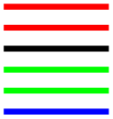
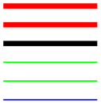
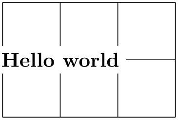
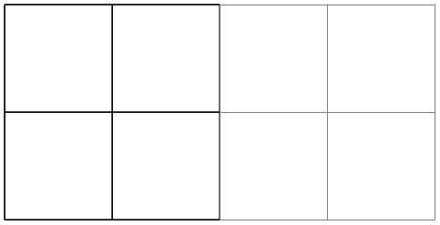
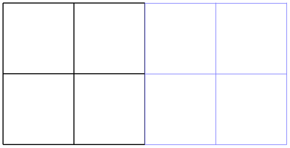
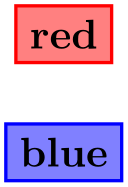
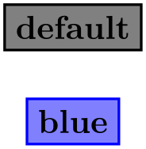

The TikZ and PGF Packages
Manual for version 3.1.10
TikZ
12 Hierarchical Structures: Package, Environments, Scopes, and Styles¶
The present section explains how your files should be structured when you use TikZ. On the top level, you need to include the tikz package. In the main text, each graphic needs to be put in a {tikzpicture} environment. Inside these environments, you can use {scope} environments to create internal groups. Inside the scopes you use \path commands to actually draw something. On all levels (except for the package level), graphic options can be given that apply to everything within the environment.
12.1 Loading the Package and the Libraries¶
-
\usepackage{tikz} % LaTeX ¶
-
\input tikz.tex % plain TeX
-
\usemodule[tikz] % ConTeXt
This package does not have any options.
This will automatically load the pgf and the pgffor package.
pgf needs to know what TeX driver you are intending to use. In most cases pgf is clever enough to determine the correct driver for you; this is true in particular if you use LaTeX. One situation where pgf cannot know the driver “by itself” is when you use plain TeX or ConTeXt together with dvipdfm. In this case, you have to write \def\pgfsysdriver{pgfsys-dvipdfm.def} before you input tikz.tex.
-
\usetikzlibrary{⟨list of libraries⟩} ¶
Once TikZ has been loaded, you can use this command to load further libraries. The list of libraries should contain the names of libraries separated by commas. Instead of curly braces, you can also use square brackets, which is something ConTeXt users will like. If you try to load a library a second time, nothing will happen.
Example: \usetikzlibrary{arrows.meta}
The above command will load a whole bunch of extra arrow tip definitions.
What this command does is to load the file tikzlibrary⟨library⟩.code.tex for each ⟨library⟩ in the ⟨list of libraries⟩. If this file does not exist, the file pgflibrary⟨library⟩.code.tex is loaded instead. If this file also does not exist, an error message is printed. Thus, to write your own library file, all you need to do is to place a file of the appropriate name somewhere where TeX can find it. LaTeX, plain TeX, and ConTeXt users can then use your library.
12.2 Creating a Picture¶
12.2.1 Creating a Picture Using an Environment¶
The “outermost” scope of TikZ is the {tikzpicture} environment. You may give drawing commands only inside this environment, giving them outside (as is possible in many other packages) will result in chaos.
In TikZ, the way graphics are rendered is strongly influenced by graphic options. For example, there is an option for setting the color used for drawing, another for setting the color used for filling, and also more obscure ones like the option for setting the prefix used in the filenames of temporary files written while plotting functions using an external program. The graphic options are specified in key lists, see Section 12.4 below for details. All graphic options are local to the {tikzpicture} to which they apply.
-
\begin{tikzpicture}⟨animations spec⟩[⟨options⟩] ¶
-
⟨environment contents⟩
-
\end{tikzpicture}
-
/tikz/baseline=⟨dimension or coordinate or default⟩ (default 0pt) ¶
-
/tikz/execute at begin picture=⟨code⟩(no default) ¶
-
/tikz/execute at end picture=⟨code⟩(no default) ¶
-
/tikz/every picture(style, initially empty) ¶
All TikZ commands should be given inside this environment, except for the \tikzset command. You cannot use graphics commands like the low-level command \pgfpathmoveto outside this environment and doing so will result in chaos. For TikZ, commands like \path are only defined inside this environment, so there is little chance that you will do something wrong here.
When this environment is encountered, the ⟨options⟩ are parsed, see Section 12.4. All options given here will apply to the whole picture. Before the options you can specify animation commands, provided that the animations library is loaded, see Section 26 for details.
Next, the contents of the environment is processed and the graphic commands therein are put into a box. Non-graphic text is suppressed as well as possible, but non-pgf commands inside a {tikzpicture} environment should not produce any “output” since this may totally scramble the positioning system of the backend drivers. The suppressing of normal text, by the way, is done by temporarily switching the font to \nullfont. You can, however, “escape back” to normal TeX typesetting. This happens, for example, when you specify a node.
At the end of the environment, pgf tries to make a good guess at the size of a bounding box of the graphic and then resizes the picture box such that the box has this size. To “make its guess”, every time pgf encounters a coordinate, it updates the bounding box’s size such that it encompasses all these coordinates. This will usually give a good approximation of the bounding box, but will not always be accurate. First, the line thickness of diagonal lines is not taken into account correctly. Second, control points of a curve often lie far “outside” the curve and make the bounding box too large. In this case, you should use the [use as bounding box] option.
The following key influences the baseline of the resulting picture:
Normally, the lower end of the picture is put on the baseline of the surrounding text. For example, when you give the code \tikz\draw(0,0)circle(.5ex);, pgf will find out that the lower end of the picture is at \(-.5\mathrm {ex} - 0.2\mathrm {pt}\) (the 0.2pt are half the line width, which is 0.4pt) and that the upper end is at \(.5\mathrm {ex}+.5\mathrm {pt}\). Then, the lower end will be put on the baseline, resulting in the following: .
Using this option, you can specify that the picture should be raised or lowered such that the height ⟨dimension⟩ is on the baseline. For example, \tikz[baseline=0pt]\draw(0,0)circle(.5ex); yields since, now, the baseline is on the height of the \(x\)-axis.
This options is often useful for “inlined” graphics as in
Instead of a ⟨dimension⟩ you can also provide a coordinate in parentheses. Then the effect is to put the baseline on the \(y\)-coordinate that the given ⟨coordinate⟩ has at the end of the picture. This means that, at the end of the picture, the ⟨coordinate⟩ is evaluated and then the baseline is set to the \(y\)-coordinate of the resulting point. This makes it easy to reference the \(y\)-coordinate of, say, the baseline of nodes.
Use baseline=default to reset the baseline option to its initial configuration.
This option causes ⟨code⟩ to be executed at the beginning of the picture. This option must be given in the argument of the {tikzpicture} environment itself since this option will not have an effect otherwise. After all, the picture has already “started” later on. The effect of multiply setting this option accumulates.
This option is mainly used in styles like the every picture style to execute certain code at the start of a picture.
This option installs ⟨code⟩ that will be executed at the end of the picture. Using this option multiple times will cause the code to accumulate. This option must also be given in the optional argument of the {tikzpicture} environment.
\usetikzlibrary {backgrounds}
\begin{tikzpicture}[execute at end picture=%
{
\begin{pgfonlayer}{background}
\path[fill=yellow,rounded corners]
(current bounding box.south west) rectangle
(current bounding box.north east);
\end{pgfonlayer}
}]
\node at
(0,0) {X};
\node at
(2,1) {Y};
\end{tikzpicture}
All options “end” at the end of the picture. To set an option “globally” change the following style:
This style is installed at the beginning of each picture.
Note that you should not use \tikzset to set options directly. For instance, if you want to use a line width of 1pt by default, do not try to say \tikzset{line width=1pt} at the beginning of your document. This will not work since the line width is changed in many places. Instead, say
\tikzset{every picture/.style={line width=1pt}}
This will have the desired effect.
In other TeX formats, you should use the following commands instead:
-
\tikzpicture[⟨options⟩]
-
⟨environment contents⟩
-
\endtikzpicture
This is the plain TeX version of the environment.
-
\starttikzpicture[⟨options⟩]
-
⟨environment contents⟩
-
\stoptikzpicture
This is the ConTeXt version of the environment.
12.2.2 Creating a Picture Using a Command¶
The following command is an alternative to {tikzpicture} that is particular useful for graphics consisting of a single or few commands.
-
\tikz⟨animations spec⟩[⟨options⟩]{⟨path commands⟩} ¶
This command places the ⟨path commands⟩ inside a {tikzpicture} environment. The ⟨path commands⟩ may contain paragraphs and fragile material (like verbatim text).
If there is only one path command, it need not be surrounded by curly braces, if there are several, you need to add them (this is similar to the \foreach statement and also to the rules in programming languages like Java or C concerning the placement of curly braces).
Example: \tikz{\draw (0,0) rectangle (2ex,1ex);} yields
Example: \tikz \draw (0,0) rectangle (2ex,1ex);
yields

12.2.3 Handling Catcodes and the Babel Package¶
Inside a TikZ picture, most symbols need to have the category code 12 (normal text) in order to ensure that the parser works properly. This is typically not the case when packages like babel are used, which change catcodes aggressively.
To solve this problem, TikZ provides a small library also called babel (which can, however, also be used together with any other package that globally changes category codes). What it does is to reset the category codes at the beginning of every {tikzpicture} and to restore them at the beginning of every node. In almost all cases, this is exactly what you would expect and need, so I recommend to always load this library by saying \usetikzlibrary{babel}. For details on what, exactly, happens with the category codes, see Section 44.
12.2.4 Adding a Background¶
By default, pictures do not have any background, that is, they are “transparent” on all parts on which you do not draw anything. You may instead wish to have a colored background behind your picture or a black frame around it or lines above and below it or some other kind of decoration.
Since backgrounds are often not needed at all, the definition of styles for adding backgrounds has been put in the library package backgrounds. This package is documented in Section 45.
12.3 Using Scopes to Structure a Picture¶
Inside a {tikzpicture} environment you can create scopes using the {scope} environment. This environment is available only inside the {tikzpicture} environment, so once more, there is little chance of doing anything wrong.
12.3.1 The Scope Environment¶
-
\begin{scope}⟨animations spec⟩[⟨options⟩] ¶
-
⟨environment contents⟩
-
\end{scope}
-
/tikz/name=⟨scope name⟩(no default) ¶
-
/tikz/every scope(style, initially empty) ¶
-
/tikz/execute at begin scope=⟨code⟩(no default) ¶
-
/tikz/execute at end scope=⟨code⟩(no default) ¶
All ⟨options⟩ are local to the ⟨environment contents⟩. Furthermore, the clipping path is also local to the environment, that is, any clipping done inside the environment “ends” at its end.

\begin{tikzpicture}[ultra thick]
\begin{scope}[red]
\draw (0mm,10mm) --
(10mm,10mm);
\draw (0mm,8mm) --
(10mm,8mm);
\end{scope}
\draw (0mm,6mm) --
(10mm,6mm);
\begin{scope}[green]
\draw (0mm,4mm) --
(10mm,4mm);
\draw (0mm,2mm) --
(10mm,2mm);
\draw[blue] (0mm,0mm) --
(10mm,0mm);
\end{scope}
\end{tikzpicture}
Assigns a name to a scope reference in animations. The name is a “high-level” name that drivers do not see, so you can use spaces, number, letters, in a name, but you should not use any punctuation like a dot, a comma, or a colon.
The following style influences scopes:
This style is installed at the beginning of every scope.
The following options are useful for scopes:
This option install some code that will be executed at the beginning of the scope. This option must be given in the argument of the {scope} environment.
The effect applies only to the current scope, not to subscopes.
This option installs some code that will be executed at the end of the current scope. Using this option multiple times will cause the code to accumulate. This option must also be given in the optional argument of the {scope} environment.
Again, the effect applies only to the current scope, not to subscopes.
-
\scope⟨animations spec⟩[⟨options⟩]
-
⟨environment contents⟩
-
\endscope
Plain TeX version of the environment.
-
\startscope⟨animations spec⟩[⟨options⟩]
-
⟨environment contents⟩
-
\stopscope
ConTeXt version of the environment.
12.3.2 Shorthand for Scope Environments¶
There is a small library that makes using scopes a bit easier:
-
TikZ Library scopes ¶
\usetikzlibrary{scopes} %
LaTeX
and plain
TeX
\usetikzlibrary[scopes] %
ConTeXt
This library defines a shorthand for starting and ending
{scope} environments.
When this library is loaded, the following happens: At certain places inside a TikZ picture, it is allowed to start a scope just using a single brace, provided the single brace is followed by options in square brackets:

\usetikzlibrary {scopes}
\begin{tikzpicture}
{ [ultra thick]
{ [red]
\draw (0mm,10mm) --
(10mm,10mm);
\draw (0mm,8mm) --
(10mm,8mm);
}
\draw (0mm,6mm) --
(10mm,6mm);
}
{ [green]
\draw (0mm,4mm) --
(10mm,4mm);
\draw (0mm,2mm) --
(10mm,2mm);
\draw[blue] (0mm,0mm) --
(10mm,0mm);
}
\end{tikzpicture}
In the above example, { [ultra thick] actually causes a \begin{scope}[ultra thick] to be inserted, and the corresponding closing } causes an \end{scope} to be inserted.
The “certain places” where an opening brace has this special meaning are the following: First, right after the semicolon that ends a path. Second, right after the end of a scope. Third, right at the beginning of a scope, which includes the beginning of a picture. Also note that some square bracket must follow, otherwise the brace is treated as a normal TeX scope.
12.3.3 Single Command Scopes¶
In some situations it is useful to create a scope for a single command. For instance, when you wish to use algorithm graph drawing in order to layout a tree, the path of the tree needs to be surrounded by a scope whose only purpose is to take a key that selects a layout for the scope. Similarly, in order to put something on a background layer, a scope needs to be created. In such cases, where it will cumbersome to create a \begin{scope} and \end{scope} pair just for a single command, the \scoped command may be useful:
-
\scoped⟨animations spec⟩[⟨options⟩]⟨path command⟩ ¶
This command works like \tikz, only you can use it inside a {tikzpicture}. It will take the following ⟨path command⟩ and put it inside a {scope} with the ⟨options⟩ set. The ⟨path command⟩ may either be a single command ended by a semicolon or it may contain multiple commands, but then they must be surrounded by curly braces.

\usetikzlibrary {backgrounds}
\begin{tikzpicture}
\node [fill=white] at
(1,1) {Hello
world};
\scoped [on background layer]
\draw (0,0) grid
(3,2);
\end{tikzpicture}
12.3.4 Using Scopes Inside Paths¶
The \path command, which is described in much more detail in later sections, also takes graphic options. These options are local to the path. Furthermore, it is possible to create local scopes within a path simply by using curly braces as in
Note that many options apply only to the path as a whole and cannot be scoped in this way. For example, it is not possible to scope the color of the path. See the explanations in the section on paths for more details.
Finally, certain elements that you specify in the argument to the \path command also take local options. For example, a node specification takes options. In this case, the options apply only to the node, not to the surrounding path.
12.4 Using Graphic Options¶
12.4.1 How Graphic Options Are Processed¶
Many commands and environments of TikZ accept options. These options are so-called key lists. To process the options, the following command is used, which you can also call yourself. Note that it is usually better not to call this command directly, since this will ensure that the effect of options are local to a well-defined scope.
-
\tikzset{⟨options⟩} ¶
-
1. If the ⟨key⟩ is a full key (starts with a slash) it is handled directly as described in Section 87.
-
2. Otherwise (which is usually the case), it is checked whether /tikz/⟨key⟩ is a key and, if so, it is executed.
-
3. Otherwise, it is checked whether /pgf/⟨key⟩ is a key and, if so, it is executed.
-
4. Otherwise, it is checked whether ⟨key⟩ is a color and, if so, color=⟨key⟩ is executed.
-
5. Otherwise, it is checked whether ⟨key⟩ contains a dash and, if so, arrows=⟨key⟩ is executed.
-
6. Otherwise, it is checked whether ⟨key⟩ is the name of a shape and, if so, shape=⟨key⟩ is executed.
-
7. Otherwise, an error message is printed.
This command will process the ⟨options⟩ using the \pgfkeys command, documented in detail in Section 87, with the default path set to /tikz. Under normal circumstances, the ⟨options⟩ will be lists of comma-separated pairs of the form ⟨key⟩=⟨value⟩, but more fancy things can happen when you use the power of the pgfkeys mechanism, see Section 87 once more.
When a pair ⟨key⟩=⟨value⟩ is processed, the following happens:
Note that by the above description, all keys starting with /tikz and also all keys starting with /pgf can be used as ⟨key⟩s in an ⟨options⟩ list.
12.4.2 Using Styles to Manage How Pictures Look¶
There is a way of organizing sets of graphic options “orthogonally” to the normal scoping mechanism. For example, you might wish all your “help lines” to be drawn in a certain way like, say, gray and thin (do not dash them, that distracts). For this, you can use styles.
A style is a key that, when used, causes a set of graphic options to be processed. Once a style has been defined, it can be used like any other key. For example, the predefined help lines style, which you should use for lines in the background like grid lines or construction lines.

\begin{tikzpicture}
\draw (0,0) grid
+(2,2);
\draw[help lines] (2,0) grid
+(2,2);
\end{tikzpicture}
Defining styles is also done using options. Suppose we wish to define a style called my style and when this style is used, we want the draw color to be set to red and the fill color be set to red!20. To achieve this, we use the following option:
my
style/.style={draw=red,fill=red!20}
The meaning of the curious /.style is the following: “The key my style should not be used here but, rather, be defined. So, set up things such that using the key my style will, in the following, have the same effect as if we had written draw=red,fill=red!20 instead.”
Returning to the help lines example, suppose we prefer blue help lines. This could be achieved as follows:

\begin{tikzpicture}[help lines/.style={blue!50,very thin}]
\draw (0,0) grid
+(2,2);
\draw[help lines] (2,0) grid
+(2,2);
\end{tikzpicture}
Naturally, one of the main ideas behind styles is that they can be used in different pictures. In this case, we have to use the \tikzset command somewhere at the beginning.

\tikzset{help lines/.style={blue!50,very thin}}
% ...
\begin{tikzpicture}
\draw (0,0) grid
+(2,2);
\draw[help lines] (2,0) grid
+(2,2);
\end{tikzpicture}
Since styles are just special cases of pgfkeys’s general style facility, you can actually do quite a bit more. Let us start with adding options to an already existing style. This is done using /.append style instead of /.style:
\begin{tikzpicture}[help lines/.append style=blue!50]
\draw (0,0) grid
+(2,2);
\draw[help lines] (2,0) grid
+(2,2);
\end{tikzpicture}
In the above example, the option blue!50 is appended to the style help lines, which now has the same effect as black!50,very thin,blue!50. Note that two colors are set, so the last one will “win”. There also exists a handler called /.prefix style that adds something at the beginning of the style.
Just as normal keys, styles can be parameterized. This means that you write ⟨style⟩=⟨value⟩ when you use the style instead of just ⟨style⟩. In this case, all occurrences of #1 in ⟨style⟩ are replaced by ⟨value⟩. Here is an example that shows how this can be used.

\begin{tikzpicture}[outline/.style={draw=#1,thick,fill=#1!50}]
\node [outline=red] at
(0,1) {red};
\node [outline=blue] at
(0,0) {blue};
\end{tikzpicture}
For parameterized styles you can also set a default value using the /.default handler:

For more details on using and setting styles, see also Section 87.